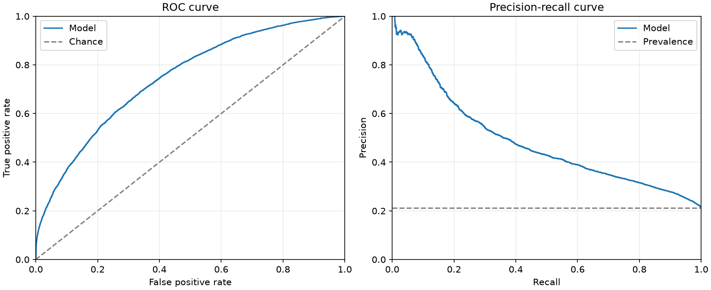
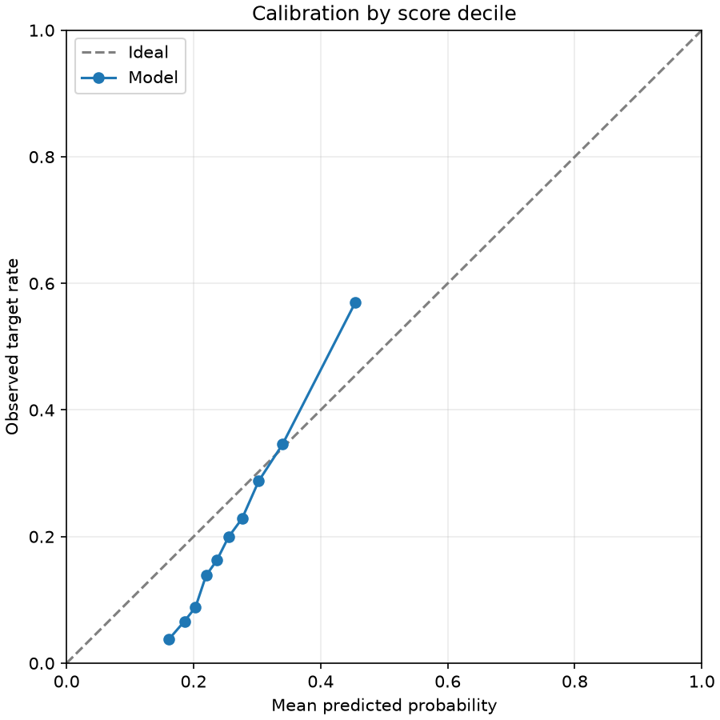
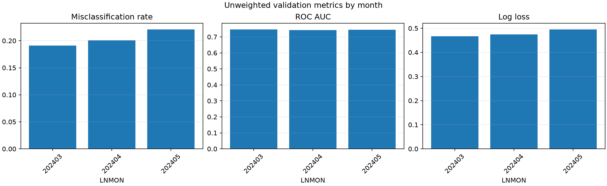
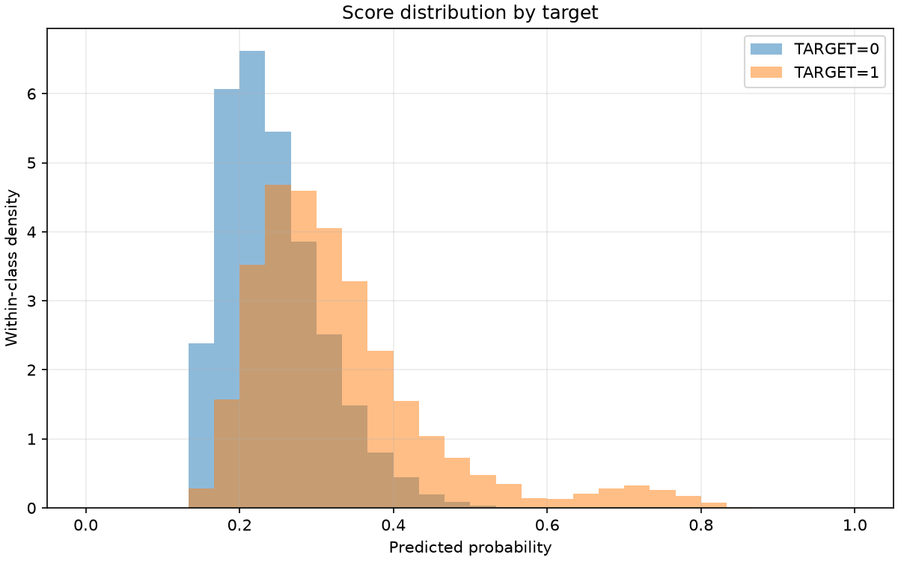
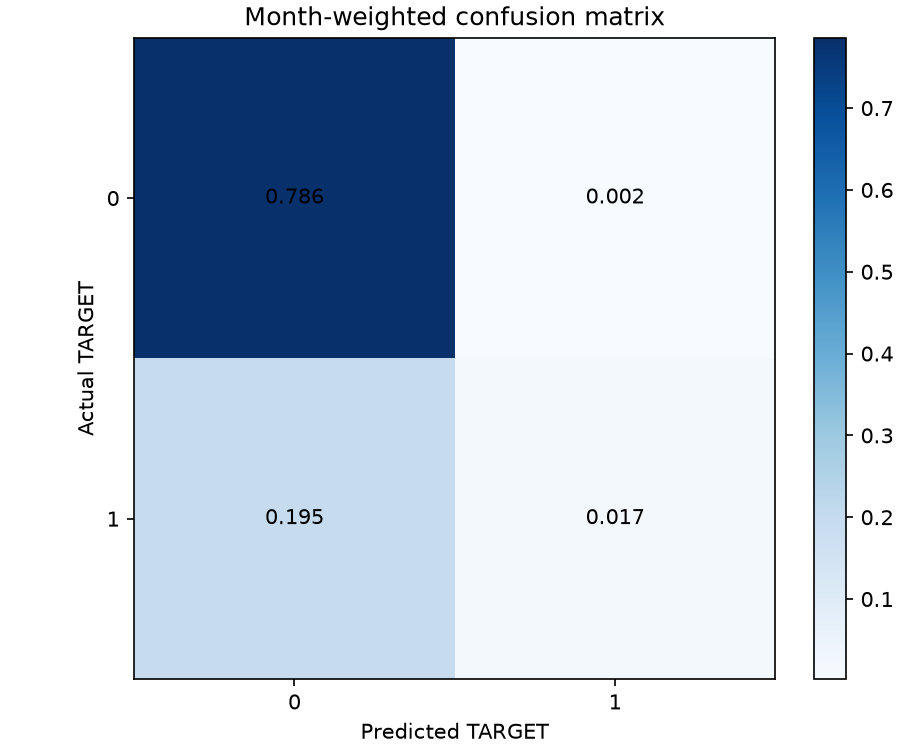

Training history

Final validation misclassification rate (overall_weighted, probability > 0.5): 0.196910
Validation months: 202403, 202404, 202405. The training-history figure reflects the model's original training validation protocol. The results describe the supplied undersampled data and are not independent test scores.
| scope | month | rows | target_1_rows | target_1_rate | misclassification_rate | roc_auc | average_precision | log_loss | brier_score |
|---|---|---|---|---|---|---|---|---|---|
| overall_unweighted | all | 41772 | 9173 | 0.21960 | 0.20483 | 0.74522 | 0.49165 | 0.47950 | 0.15262 |
| overall_weighted | all | 41772 | 9173 | 0.21173 | 0.19691 | 0.74590 | 0.48524 | 0.47179 | 0.14912 |
| monthly_unweighted | 202403 | 13093 | 2703 | 0.20645 | 0.19102 | 0.74744 | 0.48291 | 0.46626 | 0.14659 |
| monthly_unweighted | 202404 | 13966 | 2989 | 0.21402 | 0.20063 | 0.74349 | 0.48363 | 0.47491 | 0.15055 |
| monthly_unweighted | 202405 | 14713 | 3481 | 0.23659 | 0.22110 | 0.74479 | 0.50785 | 0.49564 | 0.15996 |
The first row is the metric recorded during training; the second row scores the selected validation protocol with the same metric.
| evaluation | protocol | months | month_weighted | metric | score |
|---|---|---|---|---|---|
| training_protocol | v2 | 202403,202404,202405 | True | misclassification_rate | 0.19691 |
| selected_protocol | v2 | 202403,202404,202405 | True | misclassification_rate | 0.19691 |
| actual | predicted | rows | weight_sum |
|---|---|---|---|
| 0 | 0 | 32511 | 0.78599 |
| 0 | 1 | 88 | 0.00227 |
| 1 | 0 | 8468 | 0.19464 |
| 1 | 1 | 705 | 0.01710 |





| decile | rows | weight_sum | mean_probability | observed_target_rate |
|---|---|---|---|---|
| 1 | 4178 | 0.10219 | 0.16134 | 0.03811 |
| 2 | 4177 | 0.10036 | 0.18554 | 0.06619 |
| 3 | 4177 | 0.10024 | 0.20295 | 0.08832 |
| 4 | 4177 | 0.09984 | 0.21964 | 0.13852 |
| 5 | 4177 | 0.10063 | 0.23655 | 0.16244 |
| 6 | 4178 | 0.09916 | 0.25494 | 0.19931 |
| 7 | 4177 | 0.09873 | 0.27633 | 0.22851 |
| 8 | 4177 | 0.10132 | 0.30251 | 0.28781 |
| 9 | 4177 | 0.09770 | 0.34001 | 0.34582 |
| 10 | 4177 | 0.09982 | 0.45460 | 0.56995 |
The final classification score uses 0.5; other thresholds are diagnostics only.
| threshold | weighted_true_positive | weighted_false_positive | weighted_true_negative | weighted_false_negative | misclassification_rate | precision | recall | specificity | predicted_positive_share |
|---|---|---|---|---|---|---|---|---|---|
| 0.10000 | 0.21173 | 0.78827 | -0.00000 | 0.00000 | 0.78827 | 0.21173 | 1.00000 | -0.00000 | 1.00000 |
| 0.20000 | 0.19867 | 0.56612 | 0.22214 | 0.01306 | 0.57919 | 0.25977 | 0.93830 | 0.28181 | 0.76479 |
| 0.30000 | 0.10831 | 0.14755 | 0.64071 | 0.10343 | 0.25098 | 0.42331 | 0.51152 | 0.81281 | 0.25586 |
| 0.40000 | 0.04047 | 0.02145 | 0.76682 | 0.17127 | 0.19271 | 0.65358 | 0.19112 | 0.97279 | 0.06192 |
| 0.50000 | 0.01710 | 0.00227 | 0.78599 | 0.19464 | 0.19691 | 0.88265 | 0.08074 | 0.99712 | 0.01937 |
| 0.60000 | 0.01028 | 0.00075 | 0.78752 | 0.20145 | 0.20220 | 0.93211 | 0.04856 | 0.99905 | 0.01103 |
| 0.70000 | 0.00591 | 0.00041 | 0.78785 | 0.20582 | 0.20623 | 0.93480 | 0.02792 | 0.99948 | 0.00633 |
| 0.80000 | 0.00058 | 0.00000 | 0.78827 | 0.21115 | 0.21115 | 1.00000 | 0.00274 | 1.00000 | 0.00058 |
| 0.90000 | 0.00000 | 0.00000 | 0.78827 | 0.21173 | 0.21173 | NaN | 0.00000 | 1.00000 | 0.00000 |